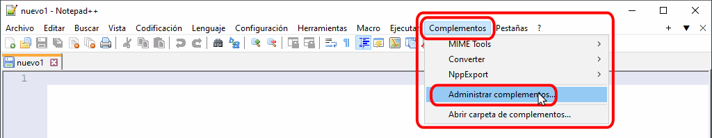
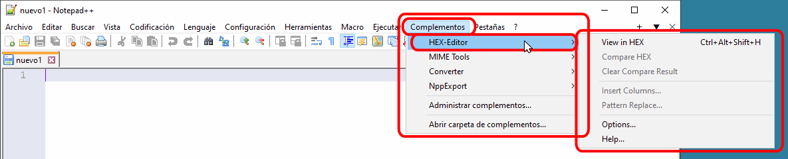
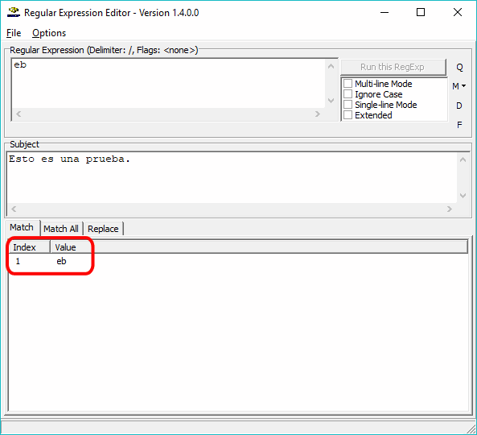

Además de un paquete WAMP como XAMPP y un editor como Eclipse, es conveniente instalar otros programas:
Extensión Html Validator
Html Validator añade a Firefox una pestaña en las herramientas de Desarrollador Web con herramientas útiles para el desarrollo de páginas web. Web Developer está incluida en Firefox Add-ons.
Actualmente (octubre de 2018), la versión más reciente de Html Validator para Firefox es la versión 0.9.8.8, publicada el 14 de enero de 2018. También está disponible para Chrome.
En la lección Complementos de Firefox se comenta el uso de esta extensión en Firefox y en la lección Extensiones de Google Chrome se comenta el uso de esta herramienta en Google Chrome..
Editor de texto sin formato: Notepad++
Notepad++ es un editor de texto sin formato que reconoce multitud de sintaxis de lenguajes de programación y permite trabajar con diferentes codificaciones (UTF-8, etc.).
Notepad++ está disponible en versiones para 32 bits y para 64 bits. La versión de 32 bits cuenta con un mayor número de plugins, entre ellos el plugin HEX_Editor, por lo que se recomienda instalar la versión de 32 bits.
Actualmente (octubre de 2018), la versión más reciente es la versión Notepad++ 7.5.9 (32 bits), publicada el 15 de octubre de 2018.
En cdlibre.org hay una sección dedicada a editores de programación, desde la que se pueden descargar las últimas versiones disponibles para 64 bits.
Plugin Manager de Notepad++
Los plug-ins de Notepad++ se distribuyen en forma de ficheros zip que hay que descomprimir y copiar en el directorio de Notepad++.
El plug-in Plugin Manager permite instalar y desinstalar plug-ins cómodamente.
Para instalar el Plugin Manager en Notepad++:
- Abra el menú y compruebe que no está instalado el plugin Plugin Manager:

- Visite la página de descarga de Plugin Manager
- Descargue la última versión disponible del fichero comprimido PluginManager_vX.Y.Z_x64.zip:

- Descomprima el fichero y copie las dos carpetas que contiene (plugins y updater) en la carpeta de Notepad++ (normalmente C:\Program Files\Notepad++). La carpeta de Notepad++ ya contiene dos carpetas plugins y updater con otros plugins.
- Compruebe que el plugin Plugin Manager se muestra en el menú :

Plug-in HEX-Editor de Notepad++
El plug-in HEX-Editor permite ver y editar todos los bytes de un fichero.
Este plug-in sólo está disponible para la versión de 32 bits de Notepad++. Actualmente (octubre de 2018), la última versión de este plug-in es la versión 0.9.5, publicada el 9 de septiembre de 2009.
Este plug-in se puede descargar del repositorio de plug-ins de SourceForge, o más códomanete, con el Plugin Manager.
Para instalar HEX-Editor con el Plugin Manager en Notepad++:
- Elija la opción de menú :

- En la ventana del Plugin Manager se muestran los plug-ins dispnibles por orden alfabético. Marque la casilla de HEX-Editor y haga clic en Install:

- Tras la instalación del plug-in, Notepad++ necesita reiniciarse. Confirme el reinicio haciendo clic en Sí:

- Tras el reinicio, HEX-Editor está disponible a través del menú :

Editor de expresiones regulares
En la lección Expresiones regulares se indican varias páginas web en la que se pueden practicar expresiones regulares.
Regular Expression Editor es un editor de expresiones regulares.
Actualmente (octubre de 2018), la página web del programa ya no está disponible (ni siquiera la de la empresa que lo publicó). La última versión publicada fue versión Regular Expression Editor 1.4.0, publicada el 13 de marzo de 2006.
En cdlibre.org hay una sección dedicada a expresiones regulares, desde la que se puede descargar este y otros programas similares.
Utilizar Regular Expression Editor
Regular Expression Editor permite comprobar expresiones regulares compatibles con Perl. La ventana del programa contiene tres cajas de texto:
- la caja de texto en la el usuario se escribe el patrón (no hay que escribir los delimitadores)
- la caja de texto en la que el usuario escribe la cadena a comparar con el patrón
- la caja de texto que muestra el resultado de la comparación

En caso de que la cadena coincida con el patrón, en la caja de texto del resultado se muestra la coincidencia:

En caso de que la cadena no coincida con el patrón, en la caja de texto del resultado no se muestra nada:

Marcar la casilla "Ignore case" es equivalente a incluir el modificador "i" (no distinguir entre mayúsculas y minúsculas).

Editor de archivos .po
Poedit es un programa para la creación y edición de ficheros .po.
Actualmente (octubre de 2018), la versión libre más reciente es la versión Poedit 1.5.7, publicada el 5 de julio de 2013. Existen versiones posteriores que ya no son libres, aunque siguen siendo gratuitas (con algunas características exclusivas de la versión de pago).
En cdlibre.org hay una sección dedicada a herramientas de traducción, desde la que se puede descargar la última versión libre disponible.
Utilidades para MySQL
MySQL ofrece MySQL Workbench para el diseño de bases de datos.
Actualmente (octubre de 2018), la versión más reciente es la versión MySQL Workbench 8.0.13, publicada el 22 de octubre de 2018.
Nota: Anteriormente MySQL ofrecía un programa similar a MySQL Workbench llamado MySQL GUI Tools, que no se desarrolla desde 2009, por lo que no se recomienda su uso.
En cdlibre.org hay una sección dedicada a MySQL, desde la que se puede descargar las últimas versiones disponibles.
Utilidades para SQLite
DB Browser for SQLite permite administrar las bases de datos creadas con SQLite. La última versión disponible actualmente (octubre de 2018) es la versión DB Browser for SQLite 3.10.1, publicada el 20 de septiembre de 2017.
SQLECTRON permite administrar las bases de datos creadas con SQLite. La última versión disponible actualmente (octubre de 2018) es la versión SQLECTRON 1.30, publicada el 5 de septiembre de 2018. Por desgracia, en marzo de 2018 el autor anunció que dejaba de desarrollar este programa.
En cdlibre.org hay una sección dedicada a Bases de datos, desde la que se puede descargar las últimas versiones disponibles.